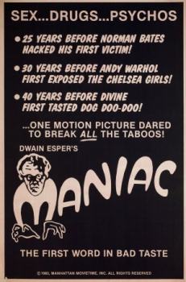
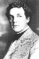

Country:United States, 51 minutes
Spoken languages:English
Genres:Horror
Director(s):Dwain Esper
Writer(s):Hildegarde Stadie
Video Codec:Unknown
Number: 97


Certification:
Storyline:
An ex-vaudeville actor is working as the assistant to a doctor who has Frankenstein aspirations. The ex-vaudeville actor kills the doctor and decides to assume the identity of the dead physician.
Cast: 

Medium: Original DVD,
Comments: Part of: 100 Greatest Horror Classics
Loaned: No
Aspect ratio: Unknown